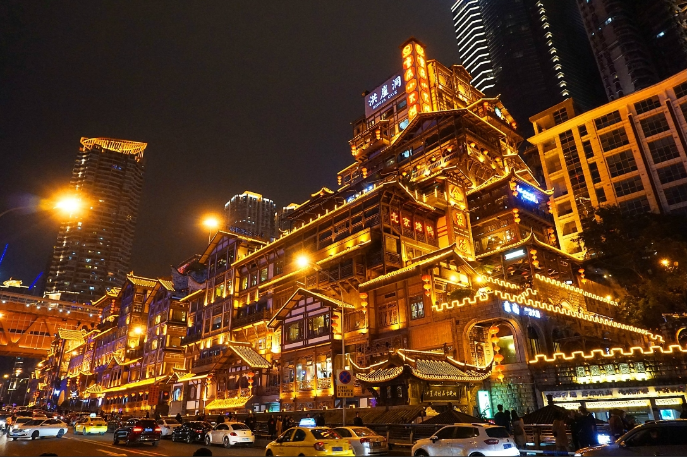
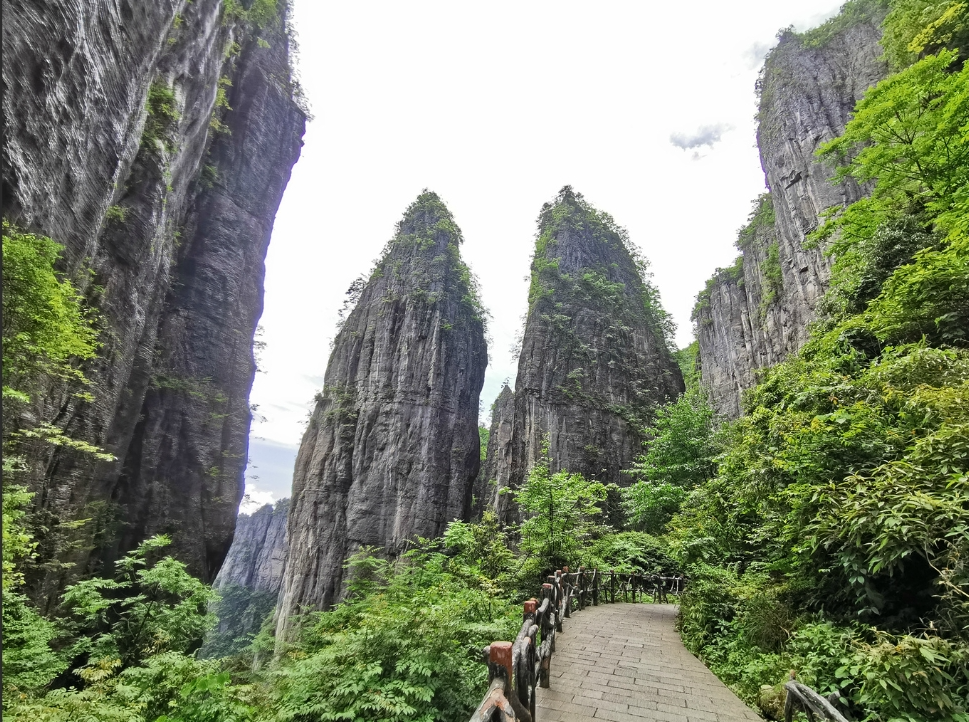

我的旅游经历
| 已访问城市 | 3个 |
|---|---|
| 最喜欢的城市 | 重庆 |
| 最难忘的景点 | 张家界国家森林公园 |
| 下次计划目的地 | 云南丽江 |
重庆 · 2022年暑假

重庆是一座充满魅力的山城，有着"8D魔幻城市"之称。我在2022年暑假与家人一起游览了这座美丽的城市。
| 旅行时间 | 2022年7月15日-7月20日 |
|---|---|
| 主要景点 | 洪崖洞、解放碑、长江索道、磁器口古镇 |
| 特色体验 | 乘坐长江索道、品尝重庆火锅、夜游洪崖洞 |
| 旅行花费 | 约3500元 |
张家界 · 2021年国庆
张家界以其独特的石英砂岩峰林地貌闻名于世，是《阿凡达》电影的取景地之一。2021年国庆假期，我与同学一起游览了这个神奇的地方。
| 旅行时间 | 2021年10月2日-10月5日 |
|---|---|
| 主要景点 | 张家界国家森林公园、天门山 |
| 特色体验 | 乘坐百龙天梯、走玻璃栈道 |
| 旅行花费 | 约2800元 |
恩施 · 2020年暑假

恩施土家族苗族自治州位于湖北省西部，有着"中国最美仙境"之称。2020年暑假，我与家人自驾游览了恩施。
| 旅行时间 | 2020年8月10日-8月15日 |
|---|---|
| 主要景点 | 恩施大峡谷、腾龙洞 |
| 特色体验 | 品尝土家美食、体验吊脚楼住宿 |
| 旅行花费 | 约2500元 |